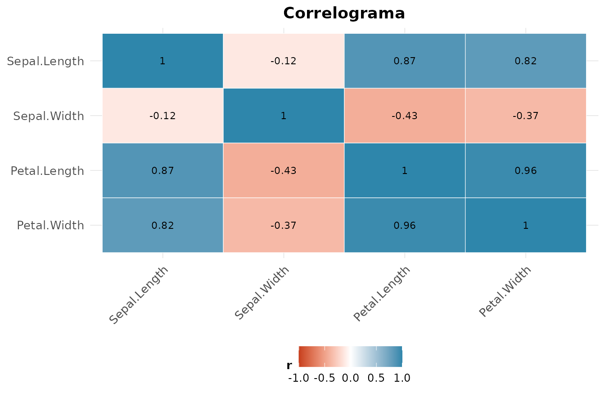
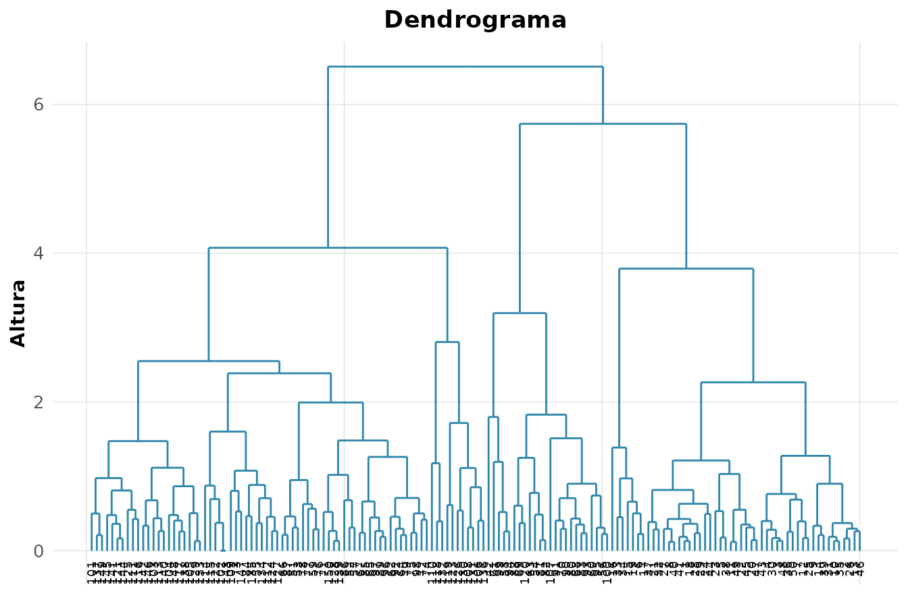

Quando as variaveis nao vivem sozinhas
Ate aqui olhamos uma ou duas variaveis por vez. O mundo real e multidimensional: um floricultor mede quatro dimensoes de cada flor, um banco dezenas de indicadores por cliente. A analise multivariada estuda a estrutura conjunta — correlacoes, agrupamentos e direcoes de maior variacao. E o ponto em que a algebra linear cobra a fatura: autovalores, autovetores e projecoes deixam de ser abstracoes e viram ferramentas.
Usaremos o classico iris — medidas reais de 150 flores
de tres especies, coletadas por Edgar Anderson e imortalizadas por
Fisher em 1936.
X <- iris[, 1:4]
mc <- rnp_matriz_correlacao(X)
mc$matriz
#> Sepal.Length Sepal.Width Petal.Length Petal.Width
#> Sepal.Length 1.0000 -0.1176 0.8718 0.8179
#> Sepal.Width -0.1176 1.0000 -0.4284 -0.3661
#> Petal.Length 0.8718 -0.4284 1.0000 0.9629
#> Petal.Width 0.8179 -0.3661 0.9629 1.0000
Petalas (comprimento e largura) sao fortemente correlacionadas — carregam informacao redundante. Essa redundancia e justamente o que a PCA explora.
PCA: a decomposicao espectral da covariancia
A Analise de Componentes Principais encontra novas direcoes (combinacoes lineares das variaveis originais) que (i) sao ortogonais entre si e (ii) capturam o maximo de variancia possivel. Matematicamente, os componentes sao os autovetores da matriz de covariancia, e os autovalores sao as variancias ao longo deles. PCA e decomposicao espectral — nada mais.
pca <- rnp_pca(X)
pca$variancia
#> # A tibble: 4 × 4
#> componente variancia percentual acumulada
#> <chr> <dbl> <dbl> <dbl>
#> 1 PC1 2.92 0.730 0.730
#> 2 PC2 0.914 0.228 0.958
#> 3 PC3 0.147 0.0367 0.995
#> 4 PC4 0.0207 0.0052 1A coluna acumulada e a chave: os dois primeiros
componentes ja explicam ~96% da variacao das quatro medidas. Reduzimos
de 4 para 2 dimensoes perdendo quase nada — a essencia da reducao de
dimensionalidade.
O biplot sobrepoe as observacoes (pontos) e as variaveis (vetores) no mesmo plano:
rnp_biplot(pca)
Vetores que apontam na mesma direcao sao correlacionados; o comprimento indica quanto a variavel pesa nos componentes. Veja como as petalas dominam o primeiro componente.
Agrupamento: encontrando estrutura sem rotulos
E se nao soubessemos as especies? O cluster busca grupos naturais. O k-means particiona minimizando a variancia intragrupo:
km <- rnp_kmeans(X, k = 3)
km$metricas
#> # A tibble: 1 × 5
#> wss_total between_ss ratio_ss k nobs
#> <dbl> <dbl> <dbl> <dbl> <int>
#> 1 139. 457. 0.767 3 150Mas k-means assume grupos esfericos e e sensivel a outliers. O k-medoids (PAM) usa observacoes reais como centros — mais robusto. E o cluster hierarquico nao exige fixar de antemao, construindo uma arvore de fusoes:
ch <- rnp_cluster_hierarquico(X, k = 3)
rnp_grafico_dendrograma(ch)
A altura de cada fusao no dendrograma indica a dissimilaridade — cortes baixos unem o que e parecido.
Quantos grupos? A silhueta decide
Escolher e a pergunta mais delicada do clustering. A silhueta mede, para cada ponto, quao bem ele pertence ao seu grupo versus ao vizinho mais proximo (varia de -1 a 1):
sil <- rnp_silhueta(X, km$clusters$cluster)
sil$media
#> [1] 0.5062Silhueta media alta (proxima de 1) indica grupos coesos e bem separados. E um criterio interno — nao precisa dos rotulos verdadeiros — para validar o numero de clusters.
Classificacao supervisionada: LDA
Quando os rotulos sao conhecidos, a Analise Discriminante Linear busca as combinacoes lineares que maximizam a separacao entre classes relativa a variacao dentro delas (a razao de Fisher). E prima da PCA, mas com um objetivo diferente: PCA maximiza variancia total, LDA maximiza separabilidade.
lda <- rnp_lda(Species ~ ., iris)
lda$acuracia
#> [1] 0.98Com apenas duas funcoes discriminantes, a LDA separa as tres especies com alta acuracia — Fisher escolheu bem seu exemplo.
Testes multivariados de medias
O teste t compara a media de uma variavel. E quando queremos comparar o vetor de medias de varias variaveis ao mesmo tempo? O T2 de Hotelling e a generalizacao multivariada do teste t para duas amostras:
rnp_hotelling(iris[1:50, 1:4], iris[51:100, 1:4])
#> # A tibble: 1 × 5
#> t2 estatistica_f gl1 gl2 p_valor
#> <dbl> <dbl> <int> <dbl> <dbl>
#> 1 2581. 625. 4 95 0Para mais de dois grupos, a MANOVA estende a ANOVA, testando se os vetores de media diferem entre as especies (estatisticas de Wilks e Pillai):
rnp_manova(cbind(Sepal.Length, Petal.Length) ~ Species, iris)
#> # A tibble: 2 × 4
#> teste estatistica aprox_f p_valor
#> <chr> <dbl> <dbl> <dbl>
#> 1 Wilks 0.0399 293. 0
#> 2 Pillai 0.988 71.8 0Fazer um teste multivariado em vez de varios testes univariados controla o erro tipo I global e captura correlacoes entre as respostas — duas vantagens que o “teste a teste” perde.
Sintese
| Objetivo | Metodo | Ideia central |
|---|---|---|
| Reduzir dimensao |
rnp_pca + rnp_biplot
|
autovetores da covariancia |
| Achar grupos |
rnp_kmeans, rnp_cluster_hierarquico
|
minimizar dissimilaridade interna |
| Validar grupos | rnp_silhueta |
coesao vs separacao |
| Classificar (com rotulo) | rnp_lda |
razao de Fisher |
| Comparar vetores de media |
rnp_hotelling, rnp_manova
|
generalizam t e ANOVA |
A multivariada e onde a geometria da algebra linear vira intuicao estatistica.